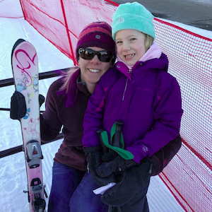
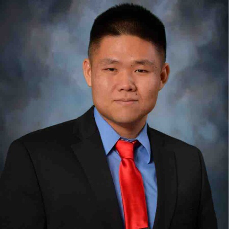
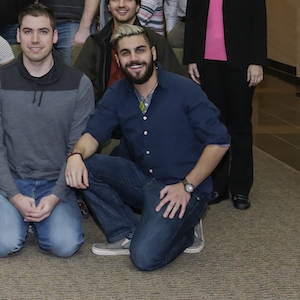

1. Publications List publications in print or accepted, with authors' names ordered the way they appear on the publications. Provide inclusive page numbers for papers in proceedings and journals. Follow the outline given below for the organization of the list of publications. Within each category place items in chronological order. (*) has undergone stringent editorial review by peers (**) invited and carries with it prestige and recognition (s) based on work as a student (w) co-authored with students you supervise (!) represents most important contribution of the past decade (P) derived from PhD thesis (D) co-authored with post-docs a. Books Authored or Co-Authored 1. Original Editions (**)(!) W.H. Casson, C.J. Sullivan, J.M Blackadar, R.P. Paternoster, J.L. Matzke, M. Rawool-Sullivan, Nuclear Reachback Reference Manual, Department of Homeland Security, LA-UR-06-0504, 2006. (**) C.J. Sullivan, Modern Methods of Gamma-Ray Spectroscopy and Isotope Identification. IOP Publishing, Bristol, UK. In preparation. 2. Revisions b. Books Edited or Co-Edited 1. Original Editions 2. Revisions c. Chapters in Books (**) C.J. Sullivan, "Basic Nuclear Physics," in W.H. Casson, C.J. Sullivan, J.M. Blackadar, R.P. Paternoster, J.L. Matzke, M. Rawool-Sullivan, Nuclear Reachback Reference Manual, Department of Homeland Security, LA-UR-06-0504, 2006. (**) C.J. Sullivan, "Isotope Identification Algorithms," in W.H. Casson, C.J. Sullivan, J.M. Blackadar, R.P. Paternoster, J.L. Matzke, M. Rawool-Sullivan, Nuclear Reachback Reference Manual, Department of Homeland Security, LA-UR-06-0504, 2006. (**) C.J. Sullivan, "Radiation Detection and Measurement," in M. Kutz (ed.), Handbook of Measurement in Science and Engineering, Volume 3, John Wiley & Sons, Inc., Hoboken, NJ. 2016. (*)(**)(!)(D) M-H Jeong, C.J. Sullivan, S. Wang, "Analysis of Dynamic Radiation Level Changes Using Surface Networks," in H. Onsrud and W. Kuhn (ed.), Advancing Geographic Information Science: The Past and Next Twenty Years. GDSI Association Press. Needham, MA. 2016. d. Monographs (longer than an article, but shorter than a book) e. Articles 1. Articles In Journals (*)(S) C.J. Branch (nee), J.D. Sanders, K.J. Kearfott, B. Stojadinovic, D.K. Wehe, “An augmented reality radiation display systems (ARRDS) for radiation protection applications,” Transactions of the American Nuclear Society, 81 (1999) 247. (*)(S) C.J. Branch (nee) and K.J. Kearfott, “Positional glow curve simulation for thermoluminescent detector (TLD) system design,” Nuclear Instruments and Methods in Physics Research A, 422 (1999) 638-642. (*)(S)(P) C.J. Sullivan, Z. He, G.F. Knoll, G. Tepper, D.K. Wehe, “A high pressure xenon gamma-ray spectrometer using a coplanar anode configuration,” Nuclear Instruments and Methods in Physics Research A, 505 (2003) 238-241. (*)(W) C.J. Sullivan, M.E. Martinez, S.E. Garner, “Wavelet analysis of sodium iodide spectra,” IEEE Transactions on Nuclear Science, 53 (5) (2006) 2916-2922. (*)(W) Y. Feng, J.E. Baciak, C. Sullivan, G. Gardner, “A pixilated design of high pressure xenon gamma-ray spectrometer,” Nuclear Instruments and Methods in Physics Research A, 579 (2007) 54-57. (*) C.J. Sullivan, S.E. Garner, K.B. Blagoev, D.L. Weiss, “Generation of customized wavelets for the analysis of gamma-ray spectra,” Nuclear Instruments and Methods in Physics Research A, 579 (2007) 275-278. (*)(W)(!) C.J. Sullivan and J. Stinnett, "Validation of a Bayesian-based isotope identification algorithm," Nuclear Instruments and Methods in Physics Research A, 784 (2014) 298-305. (*)(W)(!) Z. Liu and C.J. Sullivan, "Mobile Radiation Sensor Networks for Source Detection in a Fluctuating Background Using Geo-tagged Count Rate Data," IEEE Transactions on Nuclear Science, accepted for publication, in revision. (*)(W) J. Stinnett, M.M. Watson, C.J. Sullivan, H. Xiong, "Feature Extraction and Isotope Identification on NaI Gamma-Ray Spectra," IEEE Transactions on Nuclear Science, accepted for publication, in revision. (*)(W) J. Zhao and C.J. Sullivan, "Spectral Analysis from Radiation Sensor Networks using Principal Component Analysis," IEEE Transactions on Nuclear Science, accepted for publication, in revision. (*)(W)(!) M. Kamuda and C.J. Sullivan, "Automated Isotope Identification Algorithm Using Artificial Neural Networks," IEEE Transactions on Nuclear Science, accepted for publication, in revision. (*)(W) Y. Liu, C.J. Sullivan, and F. d’Errico, "Machine Learning Method Applied in Readout System of Superheated Droplet Detector," IEEE Transactions on Nuclear Science, accepted for publication, in revision. (*)(D) M-H Jeong, C.J. Sullivan, and S. Wang, "Urban search of radioactive materials enhanced by mobile sensor networks and geospatial methods," IEEE Transactions on Nuclear Science, accepted for publication, in revision. (*)(**) C.J. Sullivan, "Radiation hotspot detection with sensor networks enabled by geospatial techniques," CyberGIS'16, INVITED PAPER, in revision. (*)(D) M.H. Jeong, Y. Cai, C.J. Sullivan, S. Wang, "Data depth based clustering analysis," Proceedings of the 24th ACM SIGSPATIAL International Conference on Advances in Geographic Information Systems, (29) 1-10, 2016. (doi: 10.1145/2996913.2996984) 2. Articles In Conference Proceedings J.M. Blackadar, J.A. Bounds, P.A. Hypes, D.J. Mercer, C.J. Sullivan, “Evaluation of handheld isotope identifiers,” Proceedings of the INMM Southwest Section Meeting, (2003) LA-UR-03-2742. J.M. Blackadar, C.J. Sullivan, B.G. Rees, S. Garner, D.J. Mercer, “Continuing evaluation of isotopic identifiers,” Proceedings of the 45th Annual INMM Meeting, (2004) LA-UR-03-2742. C.J. Sullivan, S.E. Garner, K.B. Butterfield, “Wavelet analysis of gamma-ray spectra,” IEEE Nuclear Science Symposium Conference Record, 1 (2004) 281-286. S.L. Seitz, J.M. Blackadar, S.K. Almecci, M.A. Nelson, G.H. Gardner, M. Rawool-Sullivan, B.G. Rees, J.A. Bounds, W.H. Casson, S.E. Garner, C.J. Sullivan, “Radiation detection evaluation: RadAssessor characterizes integrated findings,” IEEE Nuclear Science Symposium Conference Record, 1 (2005) 288-291. (W) C.J. Sullivan, M.E. Martinez, S.E. Garner, “Wavelet analysis of sodium iodide spectra,” IEEE Nuclear Science Symposium Conference Record, 1 (2005) 302-306. (W) Y. Feng, J.E. Baciak, C.J. Sullivan, G.H. Gardner, “Pixelated designs of high pressure xenon gamma-ray spectrometer and position sensing,” Proceedings of the SPIE, 6319 (2006). (W) C.J. Sullivan, S.E. Garner, M. Lombardi, K.B. Butterfield, “Evaluation of key detector parameters for isotope identification,” IEEE Nuclear Science Symposium Conference Record, 2 (2007) 1181-1184. C.J. Sullivan, A. Burger, M. Groza, T.H. Prettyman, “Bulk uniformity of cadmium zinc telluride (CZT) crystals for large volume coplanar gamma spectrometers,” IEEE Nuclear Science Symposium Conference Record, 3 (2007) 1805-1808. S.A. Awadalla, H. Chen, J. Mackenzi, P. Lu, K. Iniewski, P. Marthandam, R. Redden, G. Bindley, Z. He, F. Zhang, M. Groza, A. Burger, D.R. Mayo, C.J. Sullivan, “Thickness scalability of large volume cadmium zinc telluride high resolution radiation detectors,” IEEE Nuclear Science Symposium Conference Record, 1 (2008) 58-62. (W) K. Weichman, K. Schoemaker, B. Russell, J. Rehal, C.J. Sullivan, "SEE RADS platform: social, every day, and emergency radiation detection system," American Nuclear Society Student Conference Record, (2013) (W) J. Stinnett, C.J. Sullivan, "An Automated Isotope Identification Algorithm Using Bayesian Statistics," IEEE Nuclear Science Symposium Conference Record, (2013). (W) C.J. Sullivan, J. Lu, "Automated Photopeak Detection and Analysis in Low Resolution Gamma-Ray Spectra for Isotope Identification," IEEE Nuclear Science Symposium Conference Record, (2013). C.J. Sullivan, "Nuclear Forensics Driven by Geographic Information Systems and Big Data Analytics," Conference Proceedings of the Institute for Nuclear Materials Management on Information Analysis Technologies, Techniques and Methods for Safeguards, Nonproliferation and Arms Control Verification Workshop, (2014) 273-286. (W) J.B. Stinnett, C.J. Sullivan, "Automated Isotope Identification of Single-Source and Mixed-Sources," IEEE Nuclear Science Symposium Conference Record, (2014). S.A. Pozzi, S.D. Clarke, D.K. Wehe, Z. He, K. Kearfott, J.C. Lee, A. Hero, M. Flaska, A. DiFulvio, R. Lanza, S. Kemp, J. Fischer, A. Danagoulian, A. Glaser, F. von Hippel, P. Richards, J.K. Mattingly, M. Garces, I. Jovanovic, L. Carin, P. Wilson, J. Baciak, A. Enqvist, A. Farsoni, F. d'Errico, C.J. Sullivan, "Consortium for Verification Technology Research Activities," Proceedings of the Institute for Nuclear Materials Management, (2015). (D) M-H Jeong, C.J. Sullivan, S. Wang, "Complex radiation sensor network analysis with big data analytics," IEEE Nuclear Science Symposium Conference Record, (2015). (W) Y. Liu, C.J. Sullivan, F. d'Errico, "Superheated Droplets Detector for Thermal Neutron Detection," IEEE Nuclear Science Symposium Conference Record, (2015). (W) J. Stinnett, C.J. Sullivan "Automated Isotope Identification with Bayesian Classifiers," IEEE Nuclear Science Symposium Conference Record, (2015). (D) M.-H. Jeong, S. Wang, and C. J. Sullivan. Density maps based on data. In Proceedings of the 3rd International Conference on CyberGIS and Geospatial Data Science, 2016. (D) M-H Jeong, C.J. Sullivan, M. Cheng, S. Wang, "Minimization of the impact of sensor velocity on the probability of source detection using geographically weighted methods," IEEE Nuclear Science Symposium. Accepted for presentation. 2016. (W) Y. Liu, C.J. Sullivan, F. d'Errico, "Thermal neutron detection with superheated droplet detector and real-time readout system," IEEE Nuclear Science Symposium Conference Record, 2016. (W) M. Kamuda, J. Stinnett, C.J. Sullivan, "Peak quantification with neural networks for low-resolution NaI spectra," IEEE Nuclear Science Symposium Conference Record, 2016. (W) J. Zhao, K.A. Roth, C.J. Sullivan, "Simulation and implementation of mobile sensor networks for radiation detection," IEEE Nuclear Science Symposium Conference Record, 2016. (W) Z. Liu and C.J. Sullivan, "Urban source detection with mobile sensor networks enhanced with machine learning algorithms," IEEE Nuclear Science Symposium Conference Record, 2016. (D) M-H Jeong, J. Yin, C.J. Sullivan, and S. Wang, "Robust statistical approaches to enhance spatial autocorrelation," Proceedings of GIScience 2016. Accepted for publication. 2016. (*)(**) C.J. Sullivan, "Radioactive Source Localization in Urban Environments with Sensor Networks and the Internet of Things," IEEE International Conference on Multisensor Fusion and Integration for Intelligent Systems, 2016. (W) J. Mattingly, J. Hutchinson, C. Sullivan, J. Stinnett, M. Kamuda, M. Alamaniotis, B. Simms, J. Mueller, J. Newby, J. Linkous, S. Pozzi, K. Polack, M. Hamel, Z. He, D. Goodman, M. Streicher, "CNEC and CVT Subcritical Experiments with Category I Special Nuclear Material at the Nevada National Security Site Device Assembly Facility," Proceedings for the Institute of Nuclear Materials Management, (2016).
 cjsulli@illinois.edu
 mcheng6@illinois.edu
 loumis2@illinois.edu
Start Date: August 16, 2016
Required Skills: acceptance into the NPRE graduate program, interest in fuel cycle analysis, competency in some programming language.
Desired Skills: C++, python, git, statistics, machine learning
The candidate will design and conduct validation cases, code-to-code comparison simulations and key transition scenarios in the Cyclus framework to demonstrate and improve upon predictive algorithms for deployment of nuclear facilities and materials. We will seek to improve upon and demonstrate the mathematical methods implemented by collaborators at the University of South Carolina in the context of advanced nuclear fuel cycle transitions. Graduate research assistants in ARFC are PhD or masters students enrolled at UofI, typically in the NPRE department. These students can be supported to conduct research that advances a dissertation or thesis project that is in synergy with the mission of the research group as a whole.
Start Date: August 16, 2016
Required Skills: acceptance into the NPRE graduate program, interest in fuel cycle analysis, competency in some programming language.
Desired Skills: C++, python, git, statistics, machine learning
The candidate will design and conduct validation cases, code-to-code comparison simulations and key transition scenarios in the Cyclus framework to demonstrate and improve upon predictive algorithms for deployment of nuclear facilities and materials. We will seek to improve upon and demonstrate the mathematical methods implemented by collaborators at the University of South Carolina in the context of advanced nuclear fuel cycle transitions. Graduate research assistants in ARFC are PhD or masters students enrolled at UofI, typically in the NPRE department. These students can be supported to conduct research that advances a dissertation or thesis project that is in synergy with the mission of the research group as a whole.
All members of the research group are required to agree with the code of conduct.
As your PI, it is my responsibility to do a number of things.
Students who are my advisees have many responsibilities to themselves, to me, and to one another.
The following are not explicitly required, but are strongly encouraged.
Undergraduate students in the research group have a few core responsibilities. For details on each of these, see above for now.